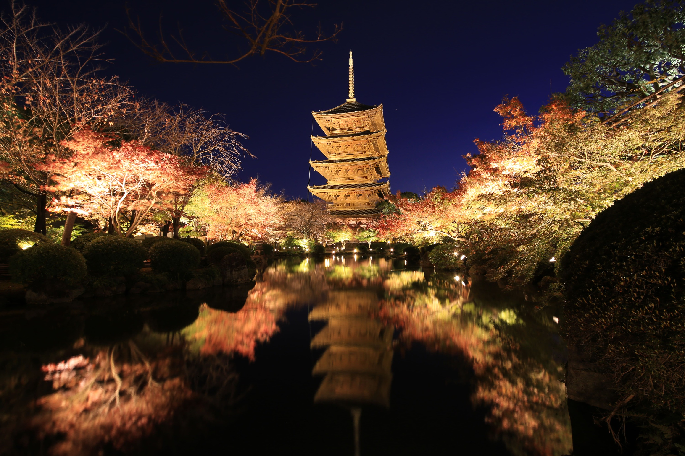

Latest Post: My Trip to Kyoto
Kyoto is a beautiful city in Japan known for its historic temples, traditional tea houses, and stunning cherry blossoms. During my trip, I visited the famous Fushimi Inari Shrine, walked through the Arashiyama Bamboo Grove, and enjoyed a traditional Kaiseki meal.
Highlights of the Trip
- Visited the Golden Pavilion (Kinkaku-ji)
- Explored the Gion District
- Tried matcha-flavored desserts